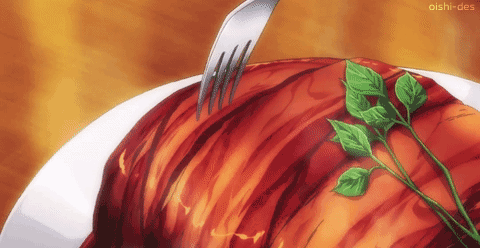

Gotcha Roast Pork (Food Wars)

This authentic dish from the show Shokugeki No Soma (Food Wars) is a dish that was first introduced and attempted by many once the episode came out. We have a roast pork that was made with a interesting twist by Soma the shows protagonist.
Ingredients
- 5-6 medium yukon gold potatoes
- ½ yellow onion, finely chopped
- 2 large king trumpet mushrooms, finely minced
- 2 cloves garlic, minced
- 4 Tbsp butter, cold + divided
- 1 Tbsp kosher salt
- 12-13 slices thick cut bacon, center-cut
- 4 sprigs rosemary, cut into 1-inch sections
- 150 ml red wine
- 75 ml sweet sake
- 10 ml soy sauce
- To garnish: watercress
Steps
- Prepare a large pot with a steamer basket and add about 1 inch of water to the pot.
- Cut the potatoes into quarters and add them to the steamer basket. Turn the heat to medium-high and bring the water to a simmer. Cover the pot with a lid, reduce the heat to medium-low, and steam the potatoes for 15-20 minutes or until they are completely tender.
- Transfer the potatoes to your work surface and let them sit until they are cool enough to handle, about 5 minutes. Then, peel off the skins and transfer the potatoes to a large bowl.
- Mash the potatoes with a pestle or masher until the mixture is relatively homogenous. Dont worry if there are a few chunks.
- Add 2 tablespoons of butter to a large skillet or wok. Begin heating the butter over medium-high heat. Once frothy, add the onions and mushrooms, cook for 3-4 minutes or until the onions have become slightly tender.
- Add the garlic and continue cooking the mixture until everything is lightly browned and completely tender, about 4-5 minutes.
- Transfer the mushroom mixture to the mixing bowl with the potatoes. Add the salt and knead the mixture by hand for 4-5 minutes.
- Place a large sheet of plastic wrap over your work surface. Add the filling to the center of the sheet. Shape the filling into an even mound and then wrap it tightly in the plastic wrap.
- Refrigerate the filling for 20-30 minutes
- Meanwhile, place another large sheet of plastic wrap (this may require two sheets for the width) onto your work surface. Shingle 7 pieces of thick cut bacon in the center of the plastic wrap, then lay 5 pieces of bacon perpendicular to the original slices on top. This should create a cross pattern.